CSR & FUTURE
고객과 미래를 생각하는 에너지 기업
“GS파워의 지역사회에 대한 관심은 남다릅니다. GS파워가 추구하는 소중한 가치,
그것은 우리가 일하고 있는 지역사회와 함께 행복을 가꾸고 나누는 것입니다.”
social contribution
GS파워와 청소년
GS 파워는 어려운 인근 지역 청소년을 위한 다양한 육영사업을 시행해 오고 있습니다. 창립과 더불어 시작한 장학금과 교육가자재 지원 사업은 해마다 약 300여명의 중고생들과 교육기관에 시행되는 이 지역 최고의 육영사업으로 성장해 왔습니다. 이 밖에 GS파워 구성원은 청소년 멘토링 지원, 향토야학, 어린이 워터파크 축제 청소년 사회복지 학교등의 다양한 문화예술 프로그램을 통하여 우리 지역의 청소년들의 꿈과 희망을 응원하고 있습니다.
-
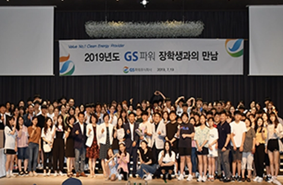
- 2019년 장학생과의 만남
- 로컬라이즈 군산 프로젝트를 통해 다양한 청년 창업을 유도하고 더 나아가 군산 지역사회에 새로운 활력을 불러일으키고자 합니다.
-
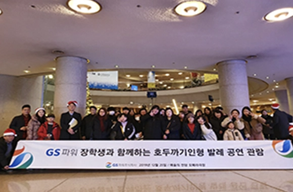
- 장학생과 함께하는 공연 관람
- 총 26개 팀의 소셜기업가들이 군산에 특화된 비즈니스 모델을 발굴하여 활발히 추진 중이며, GS파워는 이를 위해 노력합니다.
-
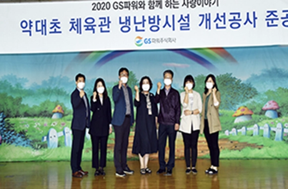
- 체육관 냉난방시설 개선공사 준공
- 체육인들을 위한 거점공간을 마련하고 매년 시설 및 사업자금 지원, 로컬라이즈 군산 페스티벌 등을 지원하고 있습니다.
-
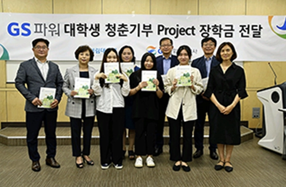
- 청춘기부 Project 장학금 전달
- 사업 개발 과정에서 지역 주민들의 지분 참여를 통해 사업에서 발생하는 수익을 지역사회와 함께 나누는 주민참여형 발전 사업을 추진하고 있습니다.
-
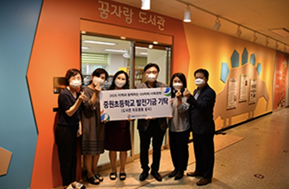
- 현악기 기증
- 현재까지 261명의 구성원이 강사로 참여하여 재능기부 활동을 하였습니다. 특히 코로나19 상황 속에서도 E-러닝 콘텐츠를 개발하고 온라인 수업을 개최하는 등 지역간·계층간 교육격차 해소에 기여하고 있습니다.
-
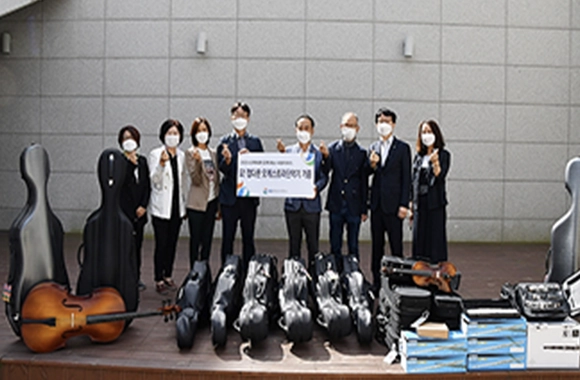
- 도서관 리모델링
- 주민들이 함께 참여하는 재생에너지 발전단지는 향후 지역경제 활성화 및 지역 사회와의 동반성장을 위한 대표적인 사회적가치 창출형 사업 모델로 자리매김할 것입니다.
GS파워와 어르신
어르신에 대한 존경과 공경은 GS 파워는 사회·경제적으로 소외를 겪고 계신 인근 어르신들을 위한 다양한 어르신 사업을 시행 하면서 풍요로운 사회를 물려주신 어르신들의 노고에 대한 감사의 마음을 잊지 않고자 노력하고 있습니다. 매년 어르신들을 위해 장수복. 장수사진. 100세 방수잔치, 봄바람 효 나들이, 독거어르신 주거개선 사업, 동절기 난방용품 제공과 함께 상황에 따른 다양한 어르신 지원 사업을 개발 시행하고 있습니다.
-
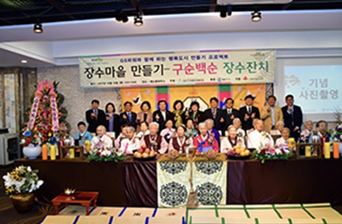
- 100세 장수잔치·장수사진
- 미세먼지 등 환경문제로 천식을 앓고 있는 어르신께서 완치될 때까지 치료비를 지원하고 가정 내 생활환경 개선 사업을 진행하고 있습니다.
-
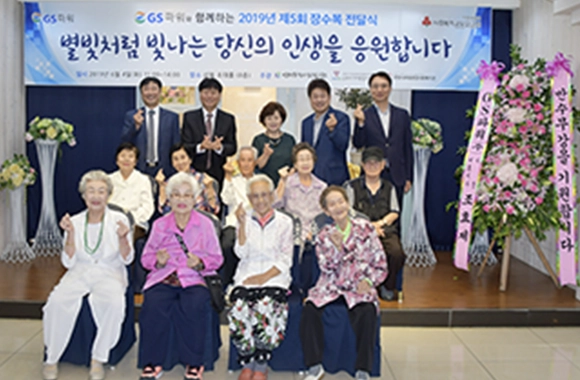
- 어르신 장수복 전달
- 어르신 장수를 위한 민간, 공공기관, 지자체가 협력하는 플랫폼을 구축해 취약계층의 의료서비스 격차를 해소하고 삶의 질 향상에 그 의미를 두고 있습니다.
-
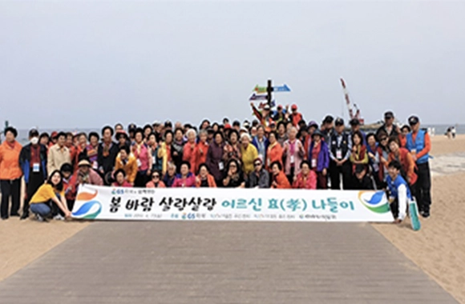
- 봄바람 효도 여행
- 마을행사 후원과 농촌 체험 프로그램을 지속 시행하여 도시와 농촌 간 소통의 기회를 늘리고, 수확 농작물을 구매하여 취약계층에 기부하고 있습니다. 특히 옥수수를 8년간 수매하여 총 14,290Box, 약 3.5억원 이상 농가 소득향상에 기여하였습니다
-
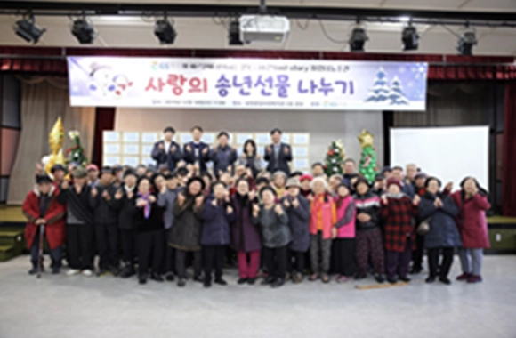
- 어르신 '희망'들어 드리기
- GS파워는 지역사회와의 상생을 위해 사회 안전망을 구축하고 있습니다. 2020년 그 일환으로, COVID-19 확산에 따라 어려움을 겪고 있는 지역의 소상공인과 사회적 기업, 협력회사를 대상으로 방역·안전용품 및 긴급 운영자금을 지원하였습니다.
-
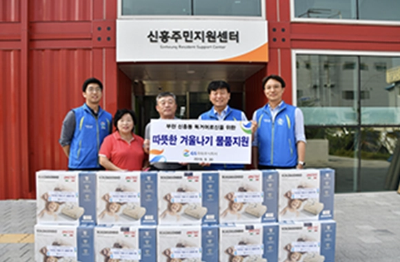
- 동절기 온기나눔
- GS파워는 우리 이웃을 향해 마음을 활짝 열고 있습니다. 인근 지역 사회복지관과의 협업을 통해 어려운 우리 이웃과 함께하는 다양한 나눔과 문화지원 활동을 이어 나가고 있습니다.
-
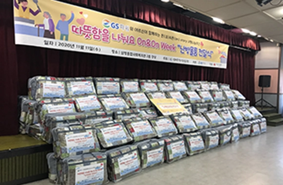
- 어르신 온기나눔
- 매년 어르신들을 위해 장수복. 장수사진. 100세 방수잔치, 봄바람 효 나들이, 독거어르신 주거개선 사업, 동절기 난방용품 제공과 함께 상황에 따른 다양한 어르신 지원 사업을 개발 시행하고 있습니다.
GS파워와 우리이웃
GS파워는 우리 이웃을 향해 마음을 활짝 열고 있습니다. 인근 지역 사회복지관과의 협업을 통해 어려운 우리 이웃과 함께하는 다양한 나눔과 문화지원 활동을 이어 나가고 있습니다. 소외계층이 따뜻한 겨울을 보낼 수 있도록 열요금 감면과 에너지 바우처 제도, 김치나눔 페스티발, 온기 나눔 행사등 적극적인 참여로 아름다운 지역공동체를 만들려는 노력에 앞장서 나가고 있습니다. 특히, GS파워 구성원들은 이웃의 삶속에 들어가서 진성성 있는 봉사활동을 함으로서 이웃사랑의 가치와 함께 더 많은 기쁨과 배우고 있습니다.
-
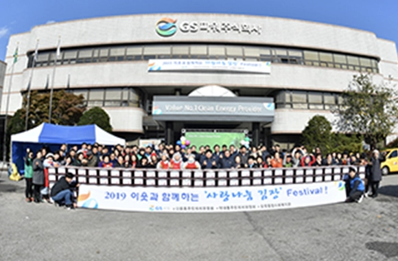
- 사랑나눔 김장페스티벌
- GS파워는 지역사회와의 상생을 위해 사회 안전망을 구축하고 있습니다. 2020년 그 일환으로, COVID-19 확산에 따라 어려움을 겪고 있는 지역의 소상공인과 사회적 기업, 협력회사를 대상으로 방역·안전용품 및 긴급 운영자금을 지원하였습니다.
-
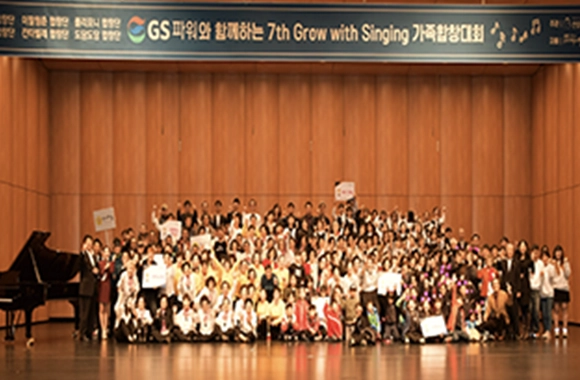
- 가족 합창대회
- GS파워는 경제적 가치뿐 아니라 사회적 가치를 창출하기 위해 노력하고 있습니다. 지역의 사회문제를 함께 고민하고, 창업을 통해 문제를 해결하는 사회 혁신 생태계 구축을 지원하고 있습니다.
-
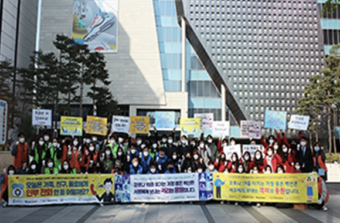
- 코로나 극복 응원 캠페인
- 또한, 대·중소기업 농어업협력재단과 ‘지역사회 코로나19 극복 지원사업’을 추진하여 약 40억원 상당의 상생협력기금을 전달하였습니다. 이 사업을 통해 소상공인과 사회적 기업 및 협력회사 등 전국 10개지역, 총 165개 업체가 경영안정자금을 지원받았습니다.
-
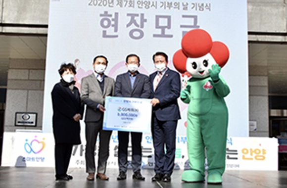
- 안양시 기부의 날
- 마을행사 후원과 농촌 체험 프로그램을 지속 시행하여 도시와 농촌 간 소통의 기회를 늘리고, 수확 농작물을 구매하여 취약계층에 기부하고 있습니다. 특히 옥수수를 8년간 수매하여 총 14,290Box, 약 3.5억원 이상 농가 소득향상에 기여하였습니다
-
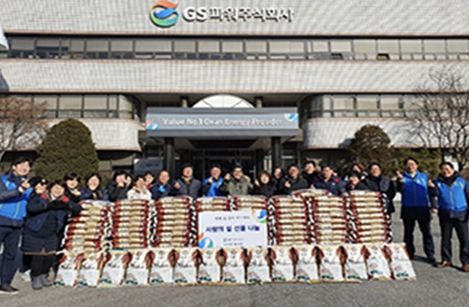
- 이웃과 함께 하는 나눔 캠페인
- 지역주민과 소통하고 상생하기 위한 다양한 지역사회 공헌활동을 수행하고 있습니다. 연탄 및 김장 나눔, 환경 정화 등 구성원의 봉사 활동뿐만 아니라 취약계층 가정 내 도시가스 타이머콕 설치, 소년소녀 가장 장학금 전달 및 학교 시설 교체 등 적극적인 지원 활동을 지속하고 있습니다.
-
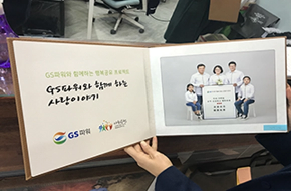
- 다문화 가족 앨범
- GS파워는 경제적 가치뿐 아니라 사회적 가치를 창출하기 위해 노력하고 있습니다. 지역의 사회문제를 함께 고민하고, 창업을 통해 문제를 해결하는 사회 혁신 생태계 구축을 지원하고 있습니다.